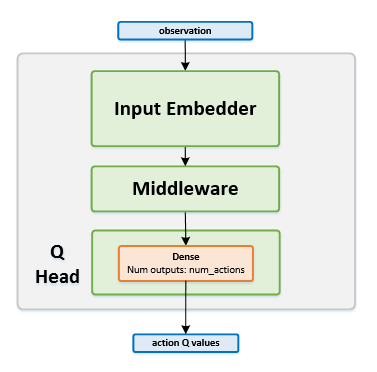

Mixed Monte Carlo
Actions space: Discrete
References: Count-Based Exploration with Neural Density Models
Network Structure

Algorithm Description
Training the network
In MMC, targets are calculated as a mixture between Double DQN targets and full Monte Carlo samples (total discounted returns).
The DDQN targets are calculated in the same manner as in the DDQN agent:
The Monte Carlo targets are calculated by summing up the discounted rewards across the entire episode:
A mixing ratio is then used to get the final targets:
Finally, the online network is trained using the current states as inputs, and the calculated targets. Once in every few thousand steps, copy the weights from the online network to the target network.